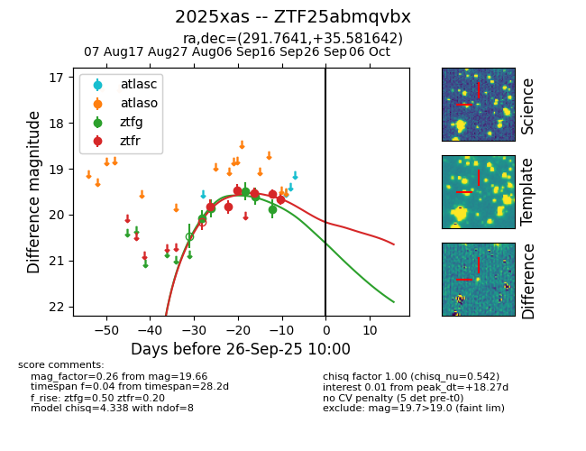
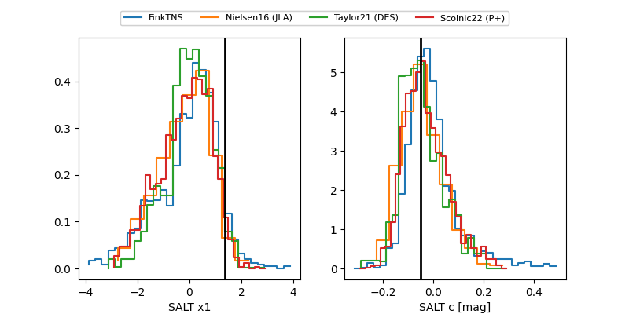

FINK: ZTF25abmqvbx
Lasair: ZTF25abmqvbx
ALeRCE: ZTF25abmqvbx
TNS: 2025xas
YSE: 2025xas
ZTF25abmqvbx (ztf,fink)
2025xas (tns,yse)
equatorial (ra, dec) = (291.7641,+35.58164)
galactic (l, b) = (68.5326,+8.81708)


last ztfg=19.87, ztfr=19.66
5 ztfg, 6 ztfr detections